SHIH SHIN
世僖科技 SHIH SHIN
目前網站已建立 15 個 SH-AS 系列 AC 疊片型電磁鐵實拍規格頁，可依完整型號、AC110／220V、行程與出力進入商品頁。
PRODUCT INDEX
世僖科技商品
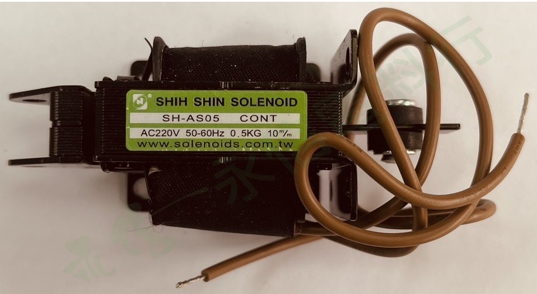
 世僖科技 SHIH SHIN
世僖科技 SHIH SHINSH-AS05 AC220V
0.5 kg｜行程 10 mm｜AC 疊片型電磁鐵
查看詳細規格 →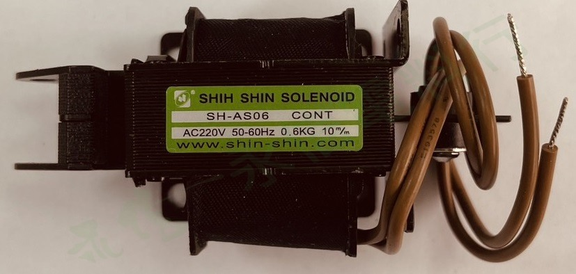
世僖科技 SHIH SHINSH-AS06 AC220V
0.6 kg｜行程 10 mm｜AC 疊片型電磁鐵
查看詳細規格 →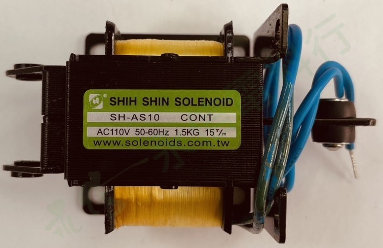
世僖科技 SHIH SHINSH-AS10 AC110V
1.5 kg｜行程 15 mm｜AC 疊片型電磁鐵
查看詳細規格 →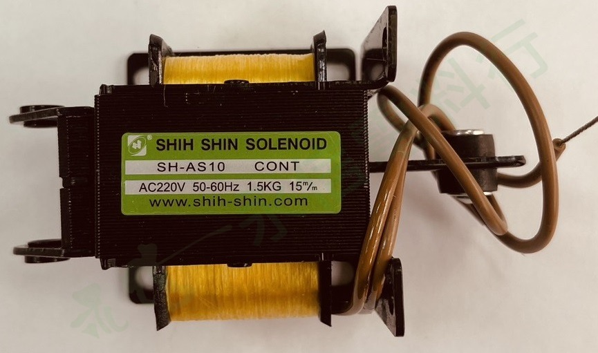
世僖科技 SHIH SHINSH-AS10 AC220V
1.5 kg｜行程 15 mm｜AC 疊片型電磁鐵
查看詳細規格 →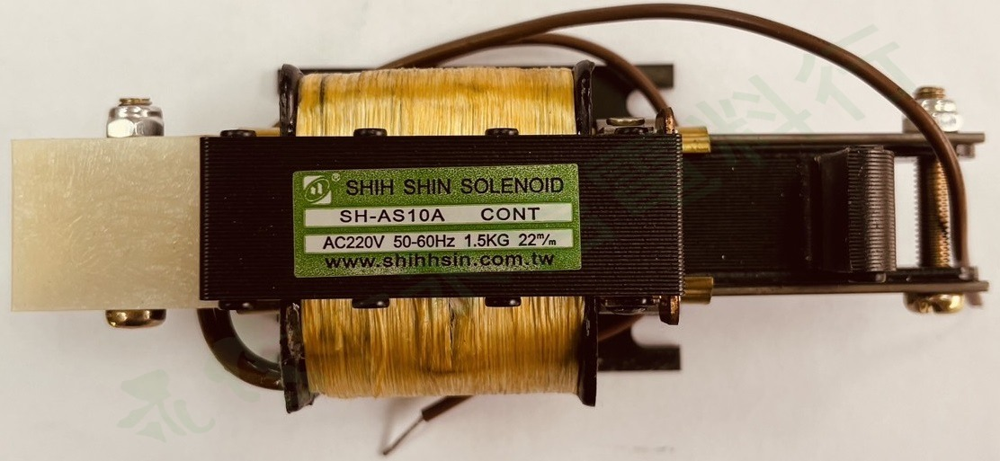
世僖科技 SHIH SHINSH-AS10A AC220V
1.5 kg｜行程 20 mm｜AC 疊片型電磁鐵
查看詳細規格 →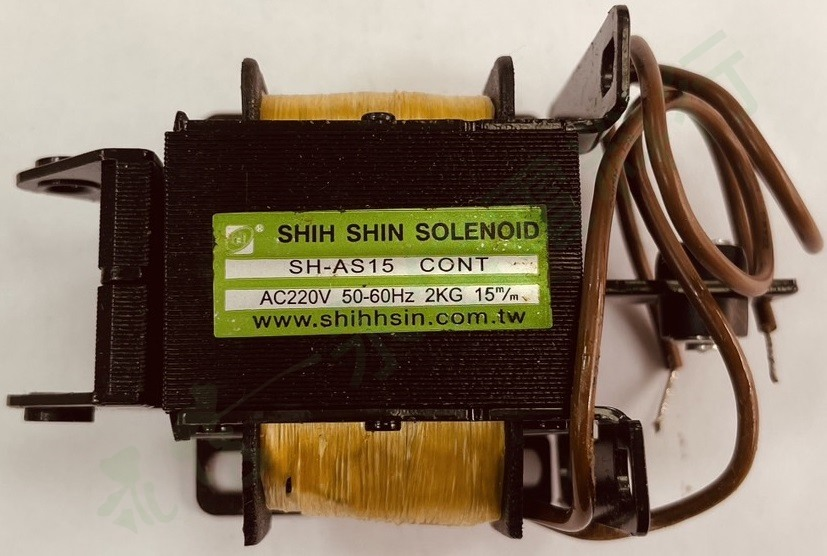
世僖科技 SHIH SHINSH-AS15 AC220V
2 kg｜行程 15 mm｜AC 疊片型電磁鐵
查看詳細規格 →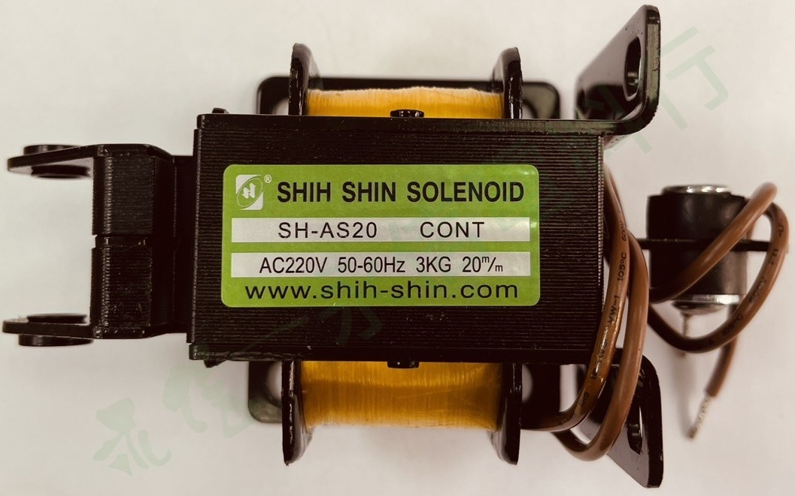
世僖科技 SHIH SHINSH-AS20 AC220V
3 kg｜行程 20 mm｜AC 疊片型電磁鐵
查看詳細規格 →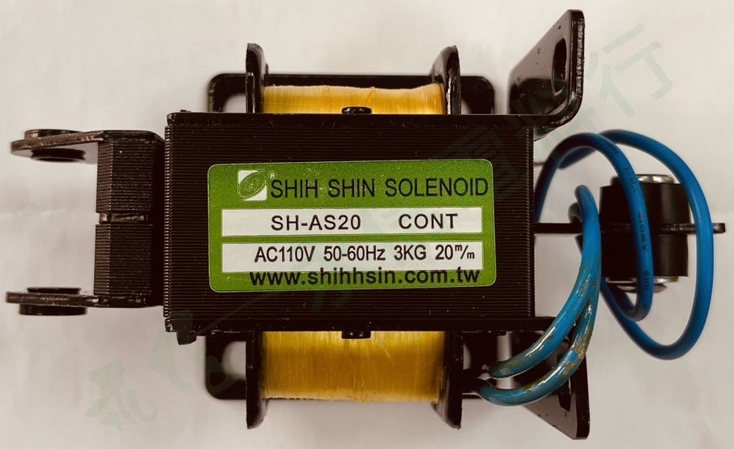
世僖科技 SHIH SHINSH-AS20 AC110V
3 kg｜行程 20 mm｜AC 疊片型電磁鐵｜短柄實物版本
查看詳細規格 →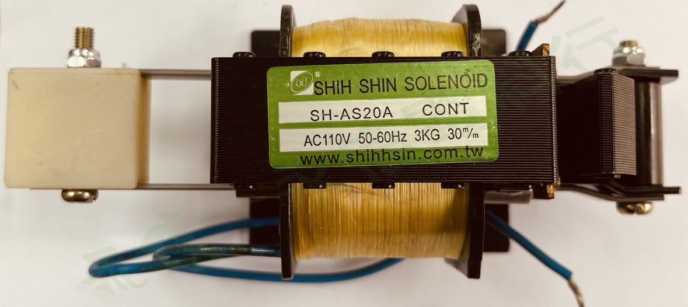
世僖科技 SHIH SHINSH-AS20A AC110V
3 kg｜行程 30 mm｜AC 疊片型電磁鐵
查看詳細規格 →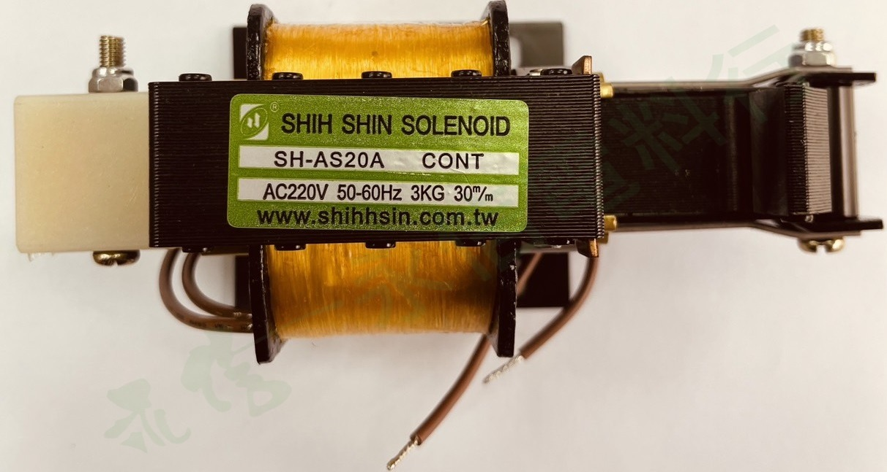
世僖科技 SHIH SHINSH-AS20A AC220V
3 kg｜行程 30 mm｜AC 疊片型電磁鐵
查看詳細規格 →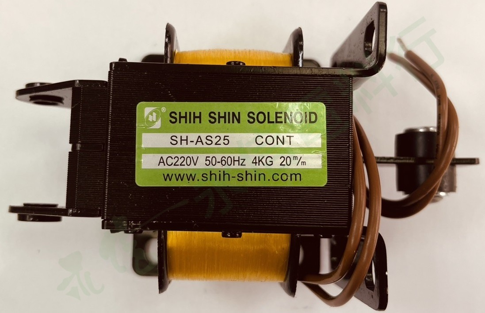
世僖科技 SHIH SHINSH-AS25 AC220V
4 kg｜行程 20 mm｜AC 疊片型電磁鐵
查看詳細規格 →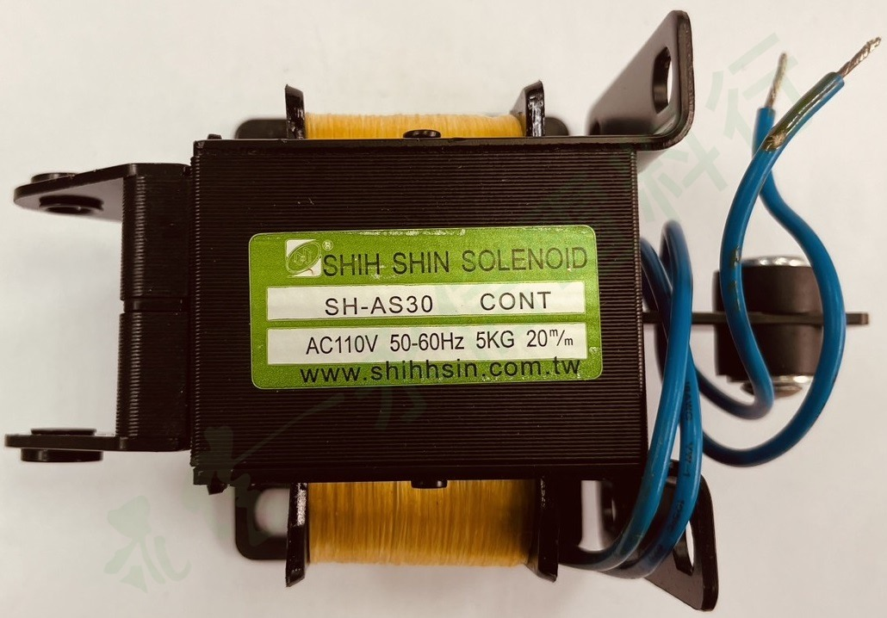
世僖科技 SHIH SHINSH-AS30 AC110V
5 kg｜行程 20 mm｜AC 疊片型電磁鐵
查看詳細規格 → 世僖科技 SHIH SHIN
世僖科技 SHIH SHINSH-AS30 AC220V
5 kg｜行程 20 mm｜AC 疊片型電磁鐵
查看詳細規格 →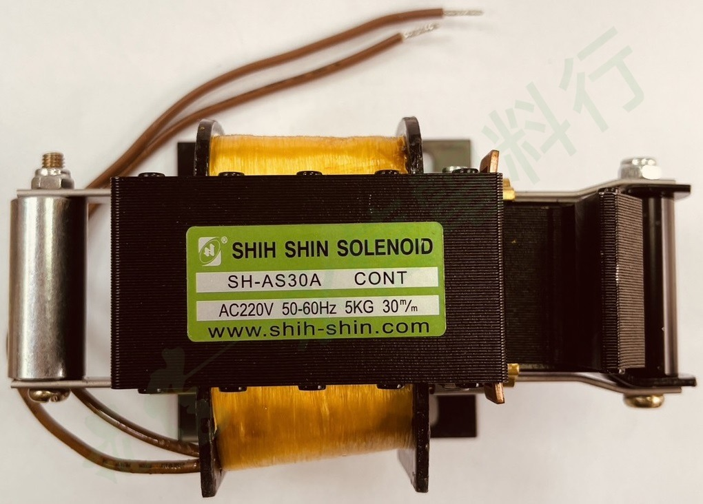
世僖科技 SHIH SHINSH-AS30A AC220V
5 kg｜行程 30 mm｜AC 疊片型電磁鐵
查看詳細規格 →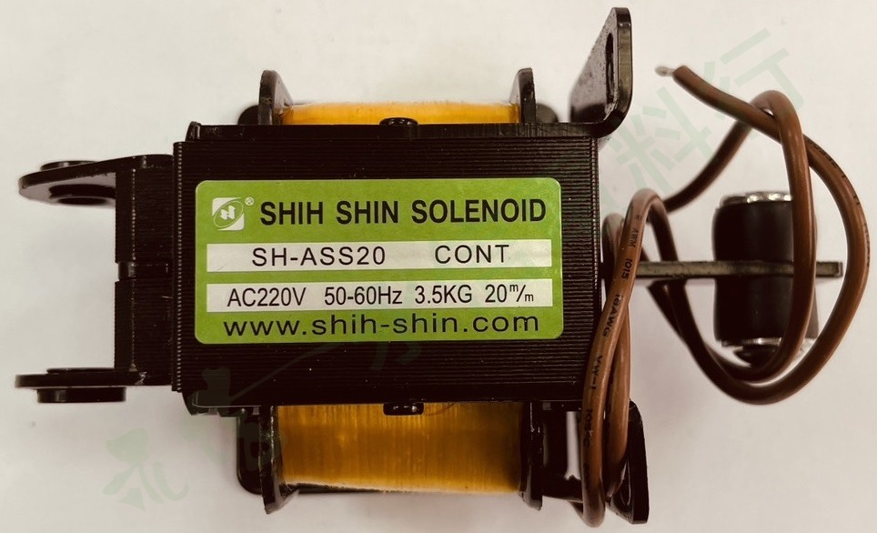
世僖科技 SHIH SHINSH-ASS20 AC220V
3.5 kg｜行程 20 mm｜AC 疊片型電磁鐵
查看詳細規格 →